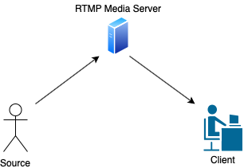
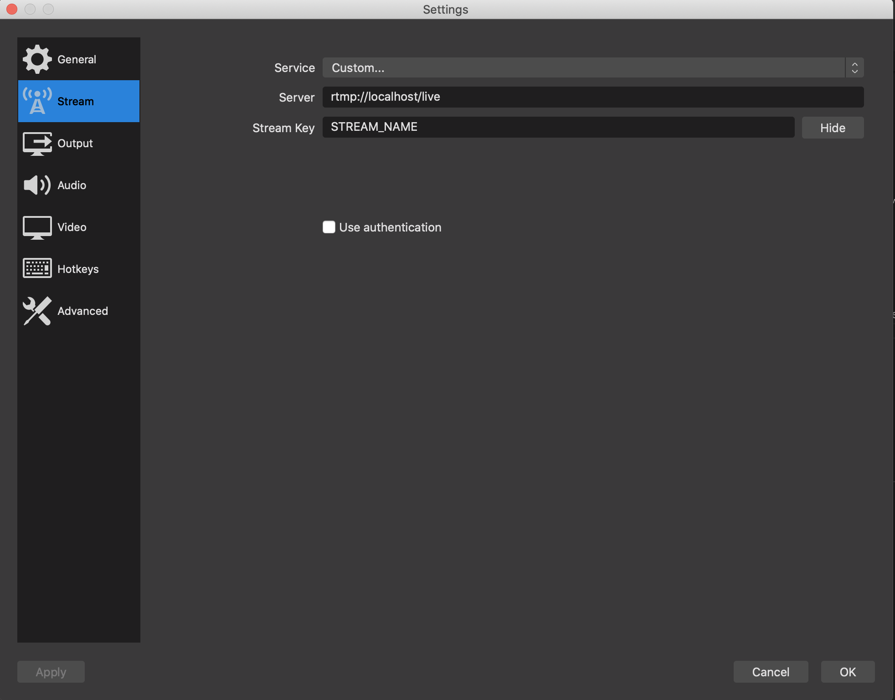
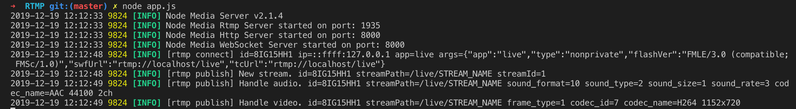
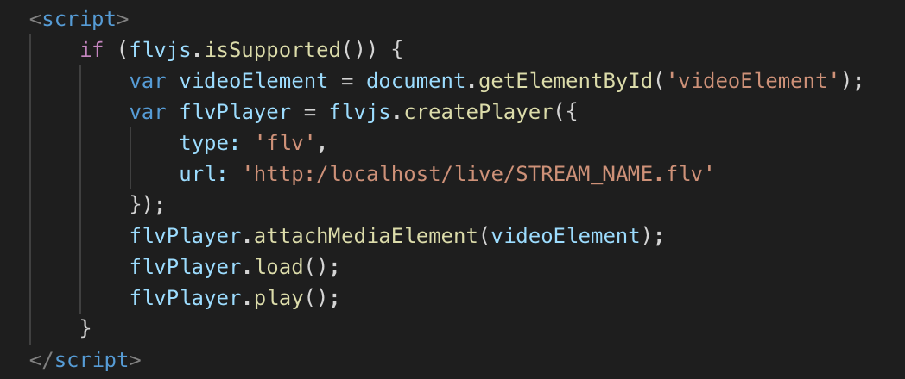

Real-Time Messaging Protocol
Initially developed by Macromedia, a graphics,
multimedia and web development software company and purchased in 2005 by
Adobe Inc. the current rights owner,
Real-Time Messaging Protocol (RTMP) was used for audio streaming. Right after,
it became popular and was used for video streaming as it provides low-latency content.
The data stream used to flow between a source and a server, previously the Flash player and the
Flash server.
Each video and audio document is sent from the source to the server into a reversible small web
format (swf) file.
Users who desire to watch the stream request the server (fig 6).
However, from the server to the users, the used protocol isn’t RTMP but other ones such as Dash or
HLS and are not detailed in this section.
Actually, not every device support Flash technology, Apple might be the precursor
for not using
Flash technology on their mobile devices as it is a 100% proprietary technology, which means is
owned entirely by one entity.
Currently, new applications don't use Adobe Flash anymore and
it will be officially deprecated on December 31, 2020 and HTML5 appears to be the solution.

Figure 1 Handshake protocol
The beginning of each RTMP connection is started by a handshake. To initialise the handshake, the client sends the C0 and C1 chunks. C0 chunk contains version information, while C1 contains synchronization parameters and random data. C2 is sent when the client receives S1 and consists in verification that sums up the previous chunks. The chunked messages are all in a constant size: 1 byte for C0 and S0, 1536 bytes for the others.
Figure 2 Streaming transaction
In order to send streaming contents, a connection should be established. This connection is opened with NetConnection(open) and closed with NetConnection(close). Audio and video streaming contents flow across a channel, created by NetStream(play). Commands such as play or pause also flow through the channel.

Figure 3
Figure 4
Technical specifications
RTMP is TCP based-protocol that works with a 3-step process once the TCP connection is established (cf figure 1).
- First the handshake to establish connection between the client and the server (cf figure 2).
- Then the connection
- Finally the stream.
It encapsulates MP3/AAC audio and MP4/FLV video multimedia streams that can be decoded on the
web
by a Flash plugin. Flash Player is a browser plugin to run applications inside a webpage. The
Flash .swf
application uses code to load the RTMP data and the Flash Player system will automatically
decode
that into live audio/video. To ensure smooth video streaming despite bandwidth fluctuations,
RTMP keeps the connection between the streaming server and the video player continuously open
during the process. Audio, video and others data are delivered separately and are broken into
segments by the protocol to be transmitted with consistence. These segments have the same
duration
and allow to adapt the stream according to the quality of the connection of the client.
Nowadays with the deprecation of flash, RTMP will not be used for video delivery to end users
anymore when doing a live stream with a content delivery network CDN. RTMP will stream the content to a server and then
the stream will be transformed to HLS(cf figure 3).
Assets and drawbacks
Advantages
RTMP is useful for streaming live content at a low latency, offering adaptative bitrate streaming (ABS)
which means it provides the best quality according to the viewers internet speed.
It is amongst the best in providing multicast support since it allows to deliver a stream to many
users without initiating a connection for each of them.
In fact, there is a direct pointer from the server to the player and the latter only consider
data corresponding to that pointer and doesn’t rely on any buffer to cache files locally on the
user computer. Thus the server and the player are in a constant connection with adaptative
bitrate streaming and monitoring can provide
precise and specific statistics about what a user did during the video.
Disadvantages
The drawbacks said in the introduction section are RTMP cannot be ran on iDevices and HTML5 cannot play RTMP. Due to its default usage of 1935 port, RTMP is not accessible when restrictive firewalls are working. RTMP is vulnerable to bandwidth issue, the stream requires a minimum internet speed. The latency is slightly increased as the server has to process the RTMP stream and then follows Dash or HLS protocol to satisfy the clients stream demands.
Usecases and fields of application
The main feature of RTMP is to provide an adaptive bitrate streaming service where users can do live streams and deliver them to several platforms(cf figure 4). In the case of a video streaming, the streamer may ask the service provider to be able to read the user chat and be able to communicate with viewers. This requires a low-latency real time messaging protocol, RTMP. Flash player may be discontinued but the gaming community still uses it. On the users side, they do not want an data to be temporarily stored in the dedicated browser folder in their computers and would rather stay on sync with the stream and not see lost frames. The users prefer low quality videos over a laggy stream, their priority is to be able to see what the player is doing and comment it in as little time as possible. This protocol’s pointer is always on sync with the stream, therefore, it does not display in-time lost content and causes cumulative delays. Unlike other progressive media players, there is none to very little buffering in RTMP, user experience is optimized, and poor network statistics are accounted for. This use case’s aim is to display the low latency and adaptation to bandwidth changes RTMP is able to provide.
Introduction
This part explains how to deploy the project with three elements which are described. You need at least two computers: one for the deployment of the source and the server and another one for the client. Figure 6
In the figure 6, the classical architecture of RTMP is presented. The latter involves three actors:
- A source: is the one that wants to broadcast the video. To do this, it sends an RTMP stream to the second actor, which corresponds to the server.
- An RTMP Media Server: is the receiver of the RTMP stream. It converts the stream into another format which is supported by HTML5 and sends it to clients who ask the stream.
- A client: is the one who wants to see the stream. To do this, he asks the RTMP Media Server and he receives the RTMP stream converted in another format which is then displayed in its browser.
In our case, the conversion is not done by the RTMP Media Server but with the player available in the webpage. It converts the RTMP stream into MP4 segments and feeds the segments into an HTML5 video element. We used the flv.js player to display the stream.
Prerequisites
- Retrieve the folder on our Github page: RTMP project.
- If you use at least two computers to test our project: the client and the source have to be in the same sub-network in order to be reachable.
- Install the latest version of Node and in the
project folder, type the following lines:
npm installandnpm install node-media-serverto install the required packages. -
Install OBS. It is an open-source software used for video recording and live streaming. It will be used to push the RTMP source of your webcam to the RTMP server.
Deployment
Source
Open Broadcaster Software - Settings
In the main page, add your webcam to Sources tab by clicking on the add button and
selecting the Video Capture Device.
Then, click on Settings and select Stream.
Change the default values by the values in the following image.

Click on ok to save the configuration.
RTMP Server: Node Media Server
Node Media Server is a Node.js implementation of RTMP Media Server. Other protocols are available through this library. This server was chosen for the demonstration because it can be run whether on MacOS or Linux.Note: Node Media Server is not the most famous solution for the RTMP Server. You can use Arut's project which is based on an NGINX server and simple to implement. Nevertheless, it will not be easily portable on macOS as it needs libraries which are not available on this OS.
Demonstration
Step 1: Start the server - RTMP Server
To start the server, run the following line in the folder where app.js is located:node app.js
Step 2: Start Streaming - Source
Go back to OBS and click on Start Streaming.If you have followed each step successfully, you can see the following lines in your RTMP server terminal:  You should not close the terminal, as the server runs.
Step 3: See the stream in the html page - Client
Open the template.html.In the
url parameter: replace localhost by the IP address which hosts the
server.

Once it is done, reload the page and your stream is now available in the page!